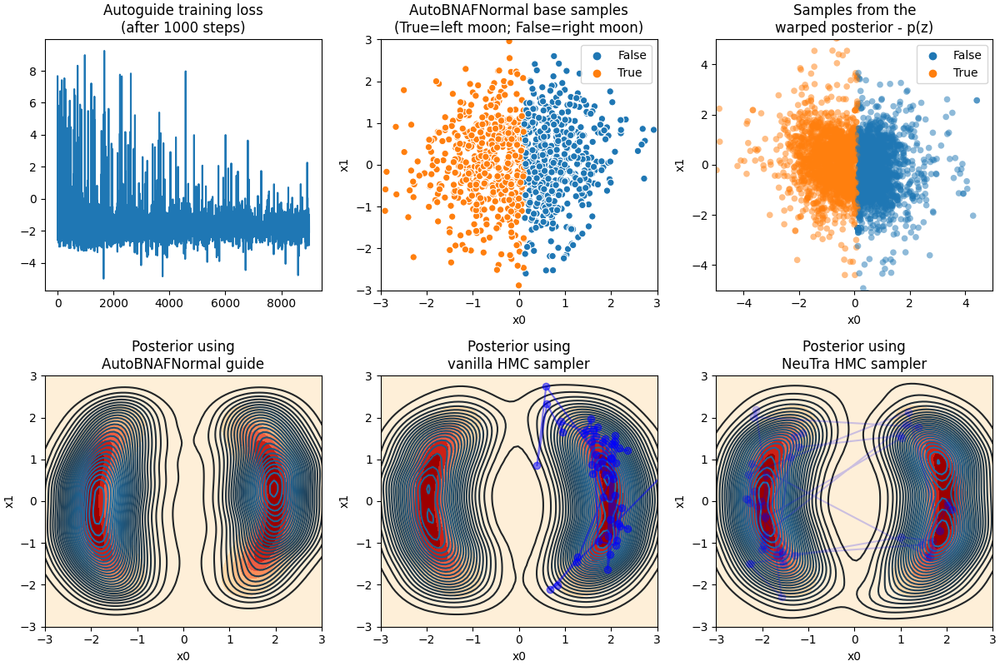

Note
Click here to download the full example code
Neural Transport¶
This example illustrates how to use a trained AutoBNAFNormal autoguide to transform a posterior to a Gaussian-like one. The transform will be used to get better mixing rate for NUTS sampler.
References:

Hoffman, M. et al. (2019), “NeuTra-lizing Bad Geometry in Hamiltonian Monte Carlo Using Neural Transport”, (https://arxiv.org/abs/1903.03704)
Out:
Start vanilla HMC...
mean std median 5.0% 95.0% n_eff r_hat
x[0] 0.15 1.81 1.13 -2.27 2.29 7.08 1.00
x[1] 0.02 1.18 0.03 -1.88 1.84 707.65 1.00
Number of divergences: 0
Start training guide...
Finish training guide. Extract samples...
Start NeuTra HMC...
mean std median 5.0% 95.0% n_eff r_hat
auto_shared_latent[0] -0.04 1.08 0.12 -1.92 1.40 662.44 1.00
auto_shared_latent[1] -0.06 1.24 -0.06 -1.77 1.72 537.48 1.00
Number of divergences: 6
Transform samples into unwarped space...
mean std median 5.0% 95.0% n_eff r_hat
x[0] 0.01 1.80 0.52 -2.31 2.22 486.94 1.00
x[1] -0.04 1.19 -0.06 -1.91 1.82 659.24 1.00
import argparse
import os
from matplotlib.gridspec import GridSpec
import matplotlib.pyplot as plt
import seaborn as sns
from jax import lax, random
import jax.numpy as jnp
from jax.scipy.special import logsumexp
import numpyro
from numpyro import optim
from numpyro.diagnostics import print_summary
import numpyro.distributions as dist
from numpyro.distributions import constraints
from numpyro.infer import ELBO, MCMC, NUTS, SVI
from numpyro.infer.autoguide import AutoBNAFNormal
from numpyro.infer.reparam import NeuTraReparam
class DualMoonDistribution(dist.Distribution):
support = constraints.real_vector
def __init__(self):
super(DualMoonDistribution, self).__init__(event_shape=(2,))
def sample(self, key, sample_shape=()):
# it is enough to return an arbitrary sample with correct shape
return jnp.zeros(sample_shape + self.event_shape)
def log_prob(self, x):
term1 = 0.5 * ((jnp.linalg.norm(x, axis=-1) - 2) / 0.4) ** 2
term2 = -0.5 * ((x[..., :1] + jnp.array([-2., 2.])) / 0.6) ** 2
pe = term1 - logsumexp(term2, axis=-1)
return -pe
def dual_moon_model():
numpyro.sample('x', DualMoonDistribution())
def main(args):
print("Start vanilla HMC...")
nuts_kernel = NUTS(dual_moon_model)
mcmc = MCMC(nuts_kernel, args.num_warmup, args.num_samples, num_chains=args.num_chains,
progress_bar=False if "NUMPYRO_SPHINXBUILD" in os.environ else True)
mcmc.run(random.PRNGKey(0))
mcmc.print_summary()
vanilla_samples = mcmc.get_samples()['x'].copy()
guide = AutoBNAFNormal(dual_moon_model, hidden_factors=[args.hidden_factor, args.hidden_factor])
svi = SVI(dual_moon_model, guide, optim.Adam(0.003), ELBO())
svi_state = svi.init(random.PRNGKey(1))
print("Start training guide...")
last_state, losses = lax.scan(lambda state, i: svi.update(state), svi_state, jnp.zeros(args.num_iters))
params = svi.get_params(last_state)
print("Finish training guide. Extract samples...")
guide_samples = guide.sample_posterior(random.PRNGKey(2), params,
sample_shape=(args.num_samples,))['x'].copy()
print("\nStart NeuTra HMC...")
neutra = NeuTraReparam(guide, params)
neutra_model = neutra.reparam(dual_moon_model)
nuts_kernel = NUTS(neutra_model)
mcmc = MCMC(nuts_kernel, args.num_warmup, args.num_samples, num_chains=args.num_chains,
progress_bar=False if "NUMPYRO_SPHINXBUILD" in os.environ else True)
mcmc.run(random.PRNGKey(3))
mcmc.print_summary()
zs = mcmc.get_samples(group_by_chain=True)["auto_shared_latent"]
print("Transform samples into unwarped space...")
samples = neutra.transform_sample(zs)
print_summary(samples)
zs = zs.reshape(-1, 2)
samples = samples['x'].reshape(-1, 2).copy()
# make plots
# guide samples (for plotting)
guide_base_samples = dist.Normal(jnp.zeros(2), 1.).sample(random.PRNGKey(4), (1000,))
guide_trans_samples = neutra.transform_sample(guide_base_samples)['x']
x1 = jnp.linspace(-3, 3, 100)
x2 = jnp.linspace(-3, 3, 100)
X1, X2 = jnp.meshgrid(x1, x2)
P = jnp.exp(DualMoonDistribution().log_prob(jnp.stack([X1, X2], axis=-1)))
fig = plt.figure(figsize=(12, 8), constrained_layout=True)
gs = GridSpec(2, 3, figure=fig)
ax1 = fig.add_subplot(gs[0, 0])
ax2 = fig.add_subplot(gs[1, 0])
ax3 = fig.add_subplot(gs[0, 1])
ax4 = fig.add_subplot(gs[1, 1])
ax5 = fig.add_subplot(gs[0, 2])
ax6 = fig.add_subplot(gs[1, 2])
ax1.plot(losses[1000:])
ax1.set_title('Autoguide training loss\n(after 1000 steps)')
ax2.contourf(X1, X2, P, cmap='OrRd')
sns.kdeplot(guide_samples[:, 0], guide_samples[:, 1], n_levels=30, ax=ax2)
ax2.set(xlim=[-3, 3], ylim=[-3, 3],
xlabel='x0', ylabel='x1', title='Posterior using\nAutoBNAFNormal guide')
sns.scatterplot(guide_base_samples[:, 0], guide_base_samples[:, 1], ax=ax3,
hue=guide_trans_samples[:, 0] < 0.)
ax3.set(xlim=[-3, 3], ylim=[-3, 3],
xlabel='x0', ylabel='x1', title='AutoBNAFNormal base samples\n(True=left moon; False=right moon)')
ax4.contourf(X1, X2, P, cmap='OrRd')
sns.kdeplot(vanilla_samples[:, 0], vanilla_samples[:, 1], n_levels=30, ax=ax4)
ax4.plot(vanilla_samples[-50:, 0], vanilla_samples[-50:, 1], 'bo-', alpha=0.5)
ax4.set(xlim=[-3, 3], ylim=[-3, 3],
xlabel='x0', ylabel='x1', title='Posterior using\nvanilla HMC sampler')
sns.scatterplot(zs[:, 0], zs[:, 1], ax=ax5, hue=samples[:, 0] < 0.,
s=30, alpha=0.5, edgecolor="none")
ax5.set(xlim=[-5, 5], ylim=[-5, 5],
xlabel='x0', ylabel='x1', title='Samples from the\nwarped posterior - p(z)')
ax6.contourf(X1, X2, P, cmap='OrRd')
sns.kdeplot(samples[:, 0], samples[:, 1], n_levels=30, ax=ax6)
ax6.plot(samples[-50:, 0], samples[-50:, 1], 'bo-', alpha=0.2)
ax6.set(xlim=[-3, 3], ylim=[-3, 3],
xlabel='x0', ylabel='x1', title='Posterior using\nNeuTra HMC sampler')
plt.savefig("neutra.pdf")
if __name__ == "__main__":
assert numpyro.__version__.startswith('0.3.0')
parser = argparse.ArgumentParser(description="NeuTra HMC")
parser.add_argument('-n', '--num-samples', nargs='?', default=4000, type=int)
parser.add_argument('--num-warmup', nargs='?', default=1000, type=int)
parser.add_argument("--num-chains", nargs='?', default=1, type=int)
parser.add_argument('--hidden-factor', nargs='?', default=8, type=int)
parser.add_argument('--num-iters', nargs='?', default=10000, type=int)
parser.add_argument('--device', default='cpu', type=str, help='use "cpu" or "gpu".')
args = parser.parse_args()
numpyro.set_platform(args.device)
numpyro.set_host_device_count(args.num_chains)
main(args)
Total running time of the script: ( 0 minutes 20.121 seconds)